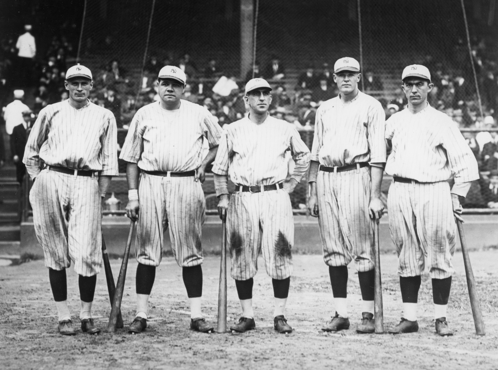
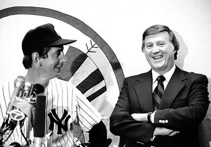
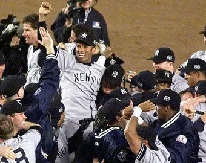

The Yankees franchise originally began in Baltimore as the Orioles, competing in the American League. In 1903 the team was bought by Frank Farrell and Bill Devery and taken to New York. From 1903 to 1912 the team played at Hilltop Park in Manhattan and was known as the New York Highlanders. Although locals, often referred to the team like the Yankees because they were in the American League. In 1913 the team moved to the Polo Grounds from Hilltop Park and was renamed the Yankees.
During the first 2 decades in New York City the Yankees were never one of the more competitive baseball teams. This all changed when the Yankees acquired Babe Ruth from the Red Sox in exchange for a loan against Fenway Park. Following this, the Yankees went on to win 3 consecutive American League pennants and their first world series in 1923. During the 1920s and 30s the Yankees would go on to win 11 pennants and 8 world series. During this era the Yankees would establish a dynasty that would last until the 1 940s. The team’s ‘Murderers’ Row’ featured Yankee legends such as Ruth, Gehrig, Lazzeri, Meusel, and Combs.
The Yankees continued their dominance in the league in the late 1950s and 1960s as well, winning championships in 1958, 1961 and 1962. Although they soon began to go through a rough patch for several years, unlike none seen before for the Yankees. The team would not win their next world series until 1977, when the team featured superstar player Reggie Jackson. Reggie Jackson was new to the team, signed under George Steinbrenner, who had bought the Yankees in 1973. Under this new ownership, the Yankees gained a new personality due to the new outspoken and controversial owner. Steinbrenner wanted the Yankees to be known for hating losing, and always winning. He was able to make this happen by spending a ton of money buying players in free agency. Steinbrenner also renovated Yankee Stadium when he purchased the team and had them play in Shae Stadium until the new Yankee Stadium was unveiled in 1976.
After winning consecutive championships in 1977 and 1978 the Yankees would go on another World Series drought throughout the 1980s and the first half of the 90s. The Yankees failed to win any championships in the 80s despite having relatively good teams, and winning a good amount of games, winning 90 games 6 times, and even making it to the World Series in 1981. The Yankees became champions again in 1996 under new manager Joe Torre who managed the team until 2007 and led the team to 6 AL championships and 4 World Series in 1996, 1998-2000. These teams would feature some Yankee stars like Derek Jeter, Mariano Rivera, David Cone, and Paul O’Neill. During this time, the Yankees were also known for the amount of money they spent on their players as they usually had one of the highest payrolls in MLB.